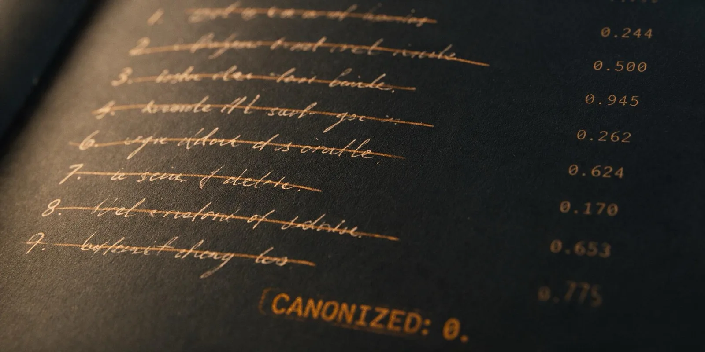

The Trial Goes On Trial

Runs 5 through 7 built a machine to stop the colony from believing untested things. The machine's own verdicts were never tested. Every canonization and every repeal in this series came out of an A/B trial with 4 children per arm, accepted on the bare rule withCrashes < withoutCrashes. So: can a verdict from that trial mean anything at all?
Two independent moves, neither of which needed a new mechanism.
One — audit the instrument. Work out what the trial rule does under the null hypothesis, then re-adjudicate every lesson the series ever canonized against a real one-sided Fisher exact test at p ≤ 0.05. No new data required; the ledgers already hold every trial's numbers.
Two — run the control that was never run. Run 2's cold-sampling arm (no parents, no library, no lineage — every bot generated from scratch) only ever went to 100 generations, while the evolved arms went to 300. Take cold sampling to 300 and compare like for like.
At four children per arm, with ties rejecting, a lesson with zero effect is canonized about 36% of the time and rejected about 64% of the time. Those numbers barely move across any plausible base crash rate. The rejection rate the series kept reading as evidence — "almost every candidate fails its control, so lessons must be placebo" — is what the rule outputs on coin flips.
And the ceiling is worse than the floor. The strongest result four children per arm can physically produce is a clean sweep, 0/4 against 4/4, which lands at p = 0.029. Every other outcome is above 0.05 before the data is even collected.
Re-adjudicating the whole canon:
| Run | Lesson | Trial | p | Verdict under a real gate |
|---|---|---|---|---|
| Run 5 | three laws | never trialled | — | canonized with no trial at all |
| Run 6 | lib is not defined | 2/4 vs 3/4 | 0.500 | REJECT |
| Run 7A | lib is not defined | 3/4 vs 4/4 | 0.500 | REJECT |
| Run 7B | .some guard | 2/4 vs 4/4 | 0.214 | REJECT |
| Run 7B | .some guard v2 | 3/4 vs 4/4 | 0.500 | REJECT |
Seven lessons canonized across the series. Zero survive. Four were trialled and all four fail; three were never trialled at all.
That includes two headline claims. Run 6's "the trial caught a bad law" — the hinge the whole religion-to-science arc turns on — was a one-child difference at p = 1.0. And "two isolated cultures independently derived and kept the same law" is two separate coin flips, both at p = 0.500, landing the same way. Neither colony converged on an insight. Both distilled the same string from the same dominant crash family, which is what a deterministic prompt does.
Run 6 did not give the colony an epistemology. It gave the colony a ritual that looked like one — which is Run 5's exact failure, one level up.
Trial arms went from 4 to 20 children, and the accept rule now requires direction and significance: a one-sided Fisher exact test at p ≤ 0.05, written dependency-free in about fifteen lines and validated against an exact hypergeometric reference on nine cases to six decimals. The p-value is recorded in the ledger, so a receipt now reads 3/20 with vs 11/20 without, p=0.0094 instead of a bare score line. Both thresholds are environment-overridable, because the next person to disagree with them should be able to.
Cold sampling ties the all-time coverage record. 94.4%, 34 of 36 cells, with zero library, zero lineage, zero lessons and every bot generated from scratch — the same figure the credulous arm set with all of that machinery running.
| Arm (300 gens) | Coverage | Cells | Best Elo | Library | Descent |
|---|---|---|---|---|---|
| Science A | 91.7% | 33 | 1099 | 15 | yes |
| Science B (replicate) | 77.8% | 28 | 1054 | 14 | yes |
| Credulous | 94.4% | 34 | 1079 | 18 | yes |
| COLD (no parents, no library) | 94.4% | 34 | 1042 | 0 | no |
So archive coverage — the headline metric across all seven previous runs, the number the build plan explicitly said to measure instead of best score — was never measuring anything cumulative. It measures how many times you sampled.
Cold produced the weakest champion of any 300-generation arm: 1042, against 1054, 1079 and 1099. The same shape holds at 100 generations back in Run 2, where cold managed 1039 against evolution's 1081 and the full ratchet's 1070. Cold sampling fills the grid and never builds a peak.
Coverage is sampling. Champion strength is descent. Two different mechanisms, reported under one number for seven runs.
That dissociation retroactively explains two things already in the record without a mechanism attached. Run 2's "cold out-explored evolution" is no longer a surprise — exploration is sampling. And the library ablation looked null because coverage was never a channel the library could act through. The ablation was run on the wrong axis.
Any future ratchet claim in this lab has to be argued on peak Elo. That single sentence rewrites the measurement section of the whole series.
Three 300-generation arms. In the top chart the cold control climbs to meet the others. In the bottom chart it never does.
Every completion in the lab funnels through one function, so that is now where tokens are counted. Each run writes a spend.json every generation — calls, prompt tokens, completion tokens, broken out by kind (mutation, extraction, lesson, cold) — so an interrupted run still leaves an honest bill behind. Cost is only filled in when real per-million rates are supplied; absent those it stays null rather than reporting an invented number.
Exact call counts across the series, which are ground truth from every metrics file: 2,804 calls total, from 97 on the smallest ablation arm to 715 on Run 7's accidental replicate.
The tokens for Runs 0 through 7 are gone. The provider returned a usage field on every one of those 2,504 calls and the code discarded it before anything was written down. That gap is closed going forward and cannot be closed backwards. Any per-token cost quoted for the earlier runs would be a reconstruction, not a measurement — which is the same distinction this run is about, so it gets said out loud rather than smoothed over.
Run 7 closed on the line that science kept the bots from lying to themselves. Run 8's finding is that the lab was doing the same thing one level up: the mechanism built to catch unverified beliefs was itself an unverified belief, and it produced verdicts that could not be distinguished from chance in either direction.
Nothing here says the lessons idea is wrong. It says the series never had an instrument capable of testing it, so the honest state of the question is unknown rather than placebo — and "unknown" is a retraction of a conclusion that was already published, not a hedge added to a new one. Run 8b then put a number on that unknown: a 5.6-point effect, consistently signed, and $30 away from an answer.
The coverage result is the larger correction. Seven runs of curves, a build plan that named archive coverage as the thing to measure, and a control arm that ties the record with no inheritance at all. What survives is narrower and better founded: descent buys peak strength, sampling buys breadth, and only the first of those was ever the ratchet's claim.
"The instrument that catches your superstitions is also a belief. Somebody has to test that one too."
The science config was re-run for 300 generations with the widened, significance-gated trials. The colony raised nine candidate doctrines and canonized zero. The ledger's law list is literally [].
That was the predicted stronger result and it landed. But the trial table is more interesting than the headline:
| Trial | Crashed with | Crashed without | p | Direction |
|---|---|---|---|---|
| gen 39 | 18/20 | 20/20 | 0.244 | helped |
| gen 91 | 14/20 | 15/20 | 0.500 | helped |
| gen 116 | 13/20 | 9/20 | 0.945 | hurt |
| gen 144 | 7/20 | 10/20 | 0.262 | helped |
| gen 189 | 9/20 | 9/20 | 0.624 | tie |
| gen 205 | 9/20 | 14/20 | 0.100 | helped — closest miss |
| gen 247 | 9/20 | 13/20 | 0.170 | helped |
| gen 258 | 4/20 | 4/20 | 0.653 | tie |
| gen 247b | 16/20 | 15/20 | 0.775 | hurt |
Helped in five, tied in two, hurt in two. Not one cleared the gate — but the direction is lopsided enough that "the lessons do nothing" stops being the obvious reading.
Nine independent trials at twenty children per arm is 180 children per arm in total. Pooled as a single fixed-effect comparison, the crash rate is 60.6% without a lesson injected and 55.0% with one — a 5.6-point absolute reduction, at p = 0.168.
Still not significant. But that number changes the conclusion of the entire series, because it is not the shape of a placebo. Run 7 concluded that prompt-injected lessons were "largely placebo for this model", reasoning from the fact that almost every candidate failed its control. Run 8 already showed that rejection rate was mostly the accept rule's own output. Now the pooled data points the other way: there is a small, consistently-signed effect that nine trials at n=20 cannot resolve.
The honest state of the question is not "placebo." It is "unresolved, effect small, and here is exactly how much data it would take."
To detect a 5.6-point difference at 80% power and p ≤ 0.05 takes 1,237 children per arm — 2,474 mutation calls per trial, about $3.35 a trial at the upper-bound rate, roughly $30 for a nine-candidate run. But that design tests one lesson at a time, and the series' actual claim is about lessons as a class — and pooled power depends on total sample size, not how it is split. Keeping the arms at twenty and pooling 62 trials across about seven more 300-generation colonies reaches the same statistical power for roughly $7.60, and yields seven extra colonies as a side effect rather than a cost. That is the run worth doing, and it is knowable now only because the instrument finally reports effect sizes instead of verdicts.
Run 8b spent 814 calls and $0.86–$1.08 — more calls than any single run in the series, and its nine trials consumed 360 mutation calls, about 44% of the entire run's budget. Every one of those trials came back null, and every one was still roughly sixty times too small to resolve the effect it was measuring.
That is the real cost curve of epistemology in this lab: at n=4 the trials were free and meaningless; at n=20 they eat nearly half the run and are still meaningless; at n=1,237 they would cost thirty dollars and finally mean something. Rigor here is not expensive because the model is expensive. It is expensive because the effect is small.
Run 8b set a new series record for best Elo — 1133, beating Run 7A's 1099, while reaching 88.9% coverage, below the cold control's 94.4%. A fourth independent confirmation of Result 2: the arm with descent built the strongest champion the lab has ever produced and still lost the coverage race to a control with no inheritance at all.
| Arm (300 gens) | Coverage | Best Elo | Laws kept | Calls |
|---|---|---|---|---|
| Science A (n=4 trials) | 91.7% | 1099 | 1 | 451 |
| Science B (replicate) | 77.8% | 1054 | 0 | 715 |
| Credulous | 94.4% | 1079 | — | 371 |
| COLD (no descent) | 94.4% | 1042 | — | 300 |
| Run 8b (n=20 gated trials) | 88.9% | 1133 | 0 | 814 |
The question the series has been circling since Run 5 is now a budget line rather than an argument: roughly $8, seven more colonies, and a pre-registered pooled test settles whether prompt-injected lessons help this model. That is the next run. Pooling nine different lessons answers "do lessons as a class help", not "does this particular lesson help" — a real limitation of the analysis above, and the reason the pooled test has to be declared before the runs rather than after.
Two items the data has already earned alongside it. Hold a lesson accountable for the whole crash budget rather than only its own error signature, since a law that suppresses its own family while inducing a new one currently looks like a success forever. And gate tool extraction on whether a fresh model can re-derive the function from its description alone — manhattanDistance is 97% of Run 4's inherited call volume, and a three-line helper is sugar, not a ratchet.
1,114 API calls · $1.03–$1.26 (gpt-oss-120b via Groq).
Series through Run 8: 3,618 calls · $6.42–$7.82. Call counts are exact, straight from each run's metrics file. Costs are a range rather than a figure, for a reason worth stating: the provider bills cached input tokens at half price and does not report the cached fraction in the API response — it appears only in the console dashboard — so the upper bound prices every input token as uncached and the lower bound prices all of them as cache hits. A sampled dashboard minute showed 68% of input tokens were cache hits, which puts the truth nearer the bottom of each range. Token counts are measured exactly from Run 8 onward; earlier runs additionally reconstruct tokens from Run 8b's measured per-call profile (3,642 in / 1,348 out), because the usage field was discarded before it was ever written down. A bound is not a measurement and a reconstruction is neither, so both are labelled.
Raw receipts — every archive, lessons ledger, metrics file, and match replay: github.com/godfreystorm/ratchet-lab